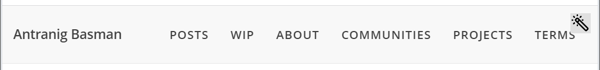

OK, so we have now imported a visually reasonable and properly lithified version of Pell into a tiny static page which is itself lithified from the rendered output of the substrates page, which will be where the most basic editing demo gets scaffolded.
I mused about making the disclosing tool into a pencil of the kind we see in the Lively Kernel UI but the “magic wand” was hard to resist and fits in with some rhetoric about this gesture. I recently dug out my original 2013 Tweet about having invented a CSS-like design extension scheme1 and this lovely Mulla Nasruddin cartoon feels as funny as it did when I saw it in one of my father’s Idries Shah books as a teenager.
{kind=link}
But staring at this tantalising UI invitation, we think… so what indeed comes next? I guess I’ll be damned if I start by writing yet another blasted piece of event binding code so I guess it actually needs to start here which is just a bit annoying since it means we need to implement, as well as the event binding syntax perhaps inspired by Vue something to back this up in the substrate in terms of not only the binding directive itself but perhaps some “event” it can fire.
Looks like I misremembered how methods had been finally implemented - rather than a “flash” signal holding the immediately dispatched arguments, it looks like there was a pretty conventional dispatcher which just used a little intermediate “resolver” to resolve any substrate arguments on the spot, here’s the standard “slow path”:
const resolver = fluid.makeArgResolver();
const argRecs = fluid.makeArray(record.args);
const argResolver = fluid.resolveComputeArgs(argRecs, shadow, resolver.resolve);
togo = function applyMethod(...args) {
resolver.backing = args;
const resolvedArgs = argResolver.map(methodFlattener);
const resolvedFunc = fluid.deSignal(func);
return resolvedFunc.apply(shadow, resolvedArgs);
};
Events were so lovely and elaborate in “Old Infusion” and it’s unclear how much of that stuff we want to port just yet.
It’s clear that there is room to implement the “layer idiom” for covering and uncovering listeners which was key to the
model of the 2018 paper on entanglements.
But for now we need the “simplest thing which can work”, I mean, HTML onclick doesn’t even have an idiom for
registering more than one listener!
I guess we don’t actually need user events yet, methods will do fine – and we have plenty of impl from
petite-vue to lift to back up the front-end binding. So interesting that petite-vue
is so unpopular and also generally unloved/orphaned by its creator who amazingly is the same creator of Vue.
Here’s the core on parser and binder –
eventually we’ll need syntax assistance for this.
Other ideas of the day – whilst demarking the action of the “CSS bundler” with specially formatted CSS comments
seemed desirable, it feels like we can get away with something much simpler and just creating one <style> node
in the document for each source of a CSS nugget in the layer/component tree. “Tokyo House insight” has it that
layer names can be folded on to the equivalent of class names. This suggests we steer away from
“component names as tag names” as seen in the default Vue consumption syntax
(and indeed (P)react and all the rest of them) but instead prefer something like
the is syntax that we see when customising builtin HTML elements as
Web Components.
Remind ourselves that Hugo Daniel used a data-component
attribute in his hilarious BoreDOM. Here’s an interesting example of
dynamically binding the Web Component is attribute using Vue but note that this doesn’t represent any dedicated Vue facility,
beyond the ability to hook into its registration of web components using the vue: prefix. Unclear whether there’s
any value in advertising custom elements right now even though we do indeed have something to offer in long run in terms of
civilising the horrific race-laden workflow of Web Component startup in terms of timing of the
lifecycle callbacks.
Choosing between v-on:click="handler" and @click="handler" – the errors triggered in Webstorm are
rather less obnoxious for the latter (highly scientific criterion!). Also the latter is more concise, doesn’t visibly
associate us with Vue, and must be widely attested/supported since most Vue apps use it!
-
Which in practice was perhaps not as usable a design affordance that I dreamed at the time, but as with so much of the “substrates definition” feels like an essential possibility that any competent substrate should allow for. ↩︎